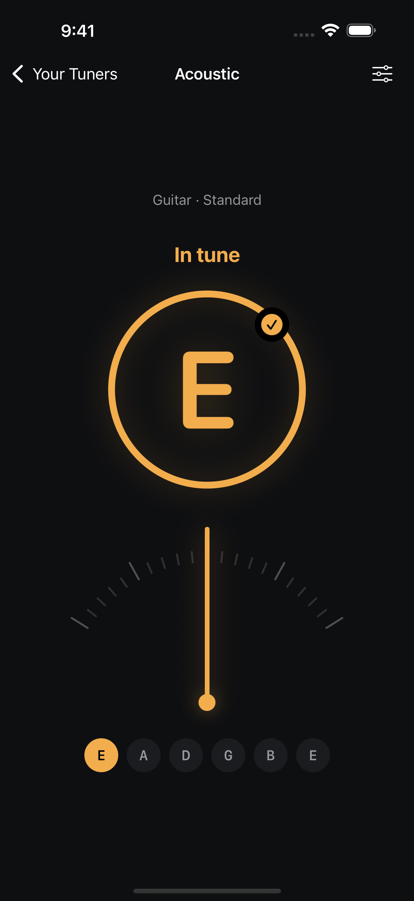

The app
Your instruments. Your tunings. Ready to play.
An iPhone tuner that remembers how you play.
Keep your guitar in Drop D, your ukulele in Low G, or a reference pitch for rehearsal. Save each setup once. Open the tuner you need in a tap.
Two tuners free. No payment required.
See what’s includedApp Store download link will be added here after launch.

Every setup. One tap.
Choose guitar, bass, ukulele, violin or chromatic mode. Built-in tunings include Standard, Drop D, D Standard, Open G, Open D and DADGAD. Give each saved tuner its own name and color, and keep its tuning, reference pitch and display together.
Two clear ways to read pitch.
Use Classic Needle or Precision Meter. See the note you play with guidance to tune up, tune down, or know when you’re in tune. Choose sharps or flats for note names.
Your reference pitch.
Set A4 anywhere from 400 to 480 Hz, with quick choices for 432, 440 and 442 Hz. Hold the reference test tone to hear your selected A. Chromatic mode follows the note you play when you don’t need fixed targets.
Start free. Make room for more.
| Feature | Free | Premium |
|---|---|---|
| Saved tuners | 2 | Unlimited |
| All built-in presets | Included | Included |
| Both pitch displays | Included | Included |
| Reference pitch and test tone | Included | Included |
| Create custom 1–12 string tunings | — | Included |
| Transpose custom tunings | — | Included |
Premium offers weekly and yearly subscriptions or a one-time lifetime purchase. Plans and local prices appear in the app before purchase. Subscriptions renew automatically unless canceled. See purchase terms.
Your audio stays on your device.
MultiTuner analyzes microphone audio on your device without saving recordings or uploading audio. Your tuner setups are stored locally. No MultiTuner account is required.
Find your next tuning.
Start with the notes, understand what changes, then keep the setup ready for next time.
For iPhone with iOS 17 or later. Microphone access is required for tuning.